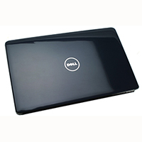
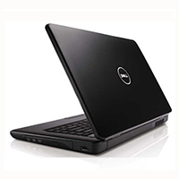
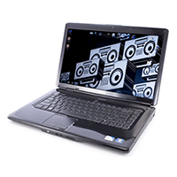
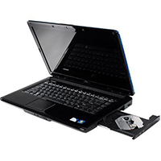
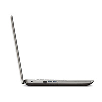
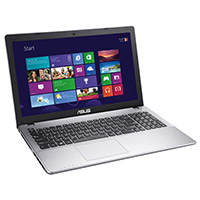
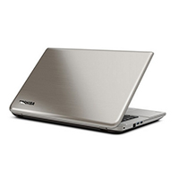
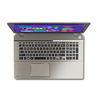

Computers
I am fasinated by computers. Any computer hardware or computer software and everything inbetween never fail to intrege me. Each week I spend many hours on these machiens, My life revolves
around computer. I spent countless hours doing things like surfing the web, programming, social media, listning to music, and many many more things. I own two laptop at the momment:-
Dell Inspiron 1545
Toshiba Satellite P50T-A-125
Dell Inspiron 1545




Dell Inspiron 1545 Specifications
Processor
Intel Pentium T4400 / 2.2 GHz
Number of Cores: Dual-Core
L2 cache - 1.0 MB
Operating System
Windows 7 professional N 32-bit
Design Colour
Black Matte
System memory
Standard : 3.0 GB
Technology : DDR2 SDRAM
Hard disk
Capacity : 250 GB
Drive rotation : 5,400 rpm
Graphics adaptor
Type : Intel GMA 4500MHD
Dynamic Video Memory Technology 5.0
Battery
technology : 6-cell Lithium ion
maximum life : up to 1h30min
get more details on specifications
Toshiba Satellite P50T-A-125




Toshiba Satellite P50T-A-125 specifications
Processor
Type: 4th generation Intel® Core™ i7-4700MQ processor with Intel® Turbo Boost Technology 2.0
Clock speed : 2.40 / 3.40 Turbo GHz
3rd level cache : 6 MB
Operating System
Windows 8.1 64-bit
Design Colour
Precious silver brushed aluminium finish, black keyboard
System memory
Standard : 12,288 (8,192 + 4,096) MB
Technology : DDR3L RAM (1,600 MHz)
Hard disk
Capacity : 1 TB
Drive rotation : 5,400 rpm
Graphics adaptor
Type : NVIDIA® GeForce® GT 740M with CUDA™ Technology and NVIDIA® Optimus™ Technology
Memory amount : 2,048 MB dedicated VRAM. Available graphics memory can be expanded using system memory, through TurboCache™
Memory type : DDR3 Video RAM (resp. Video RAM and system memory combined)
Battery
technology : lithium-ion (prismatic), 4 cell
maximum life : up to 3h30min (Mobile Mark™ 2012)
get full specifications at official Toshiba webpage